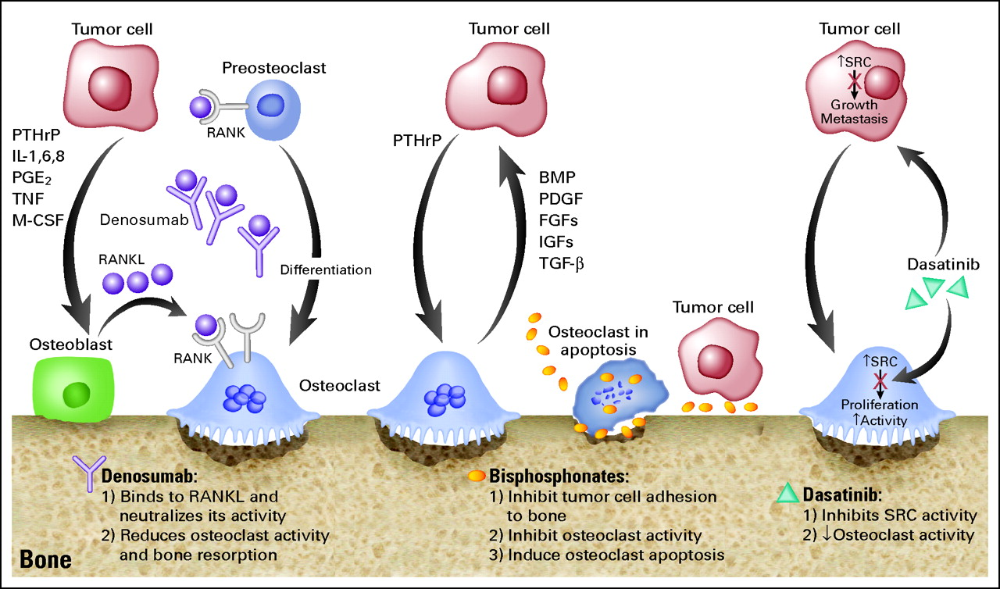
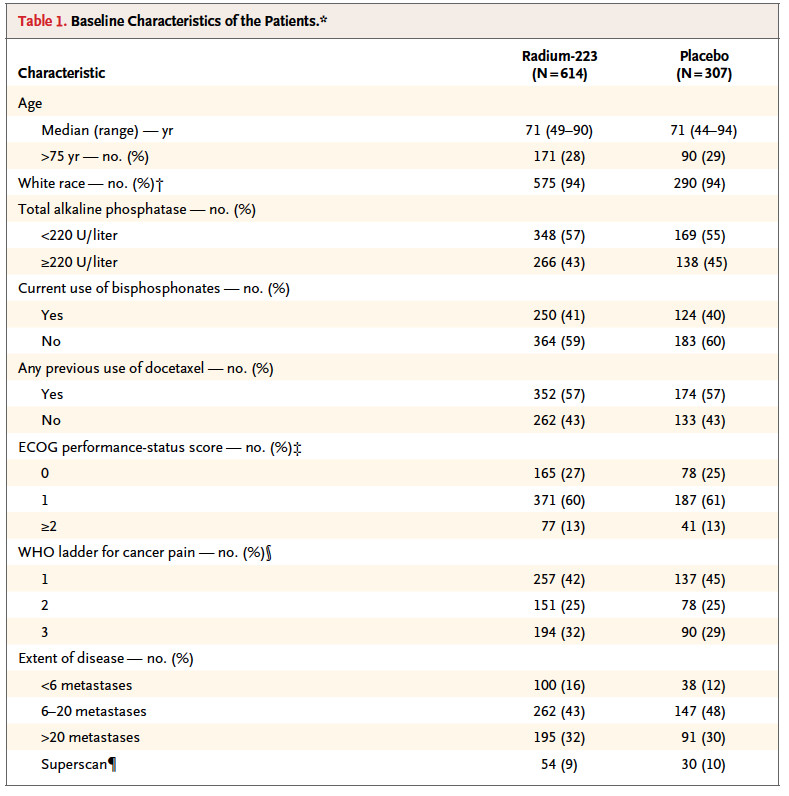
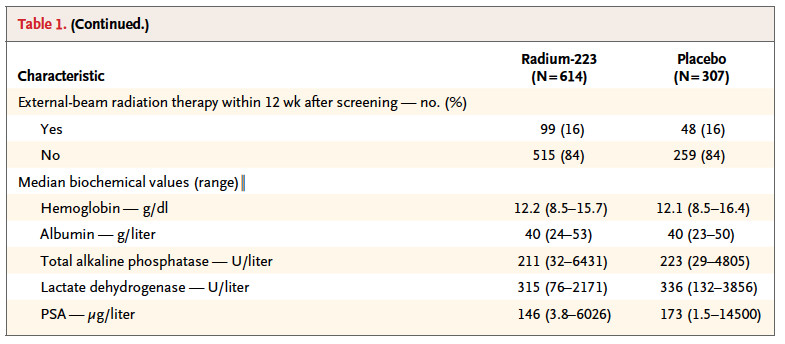
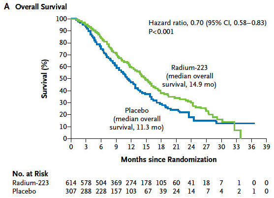
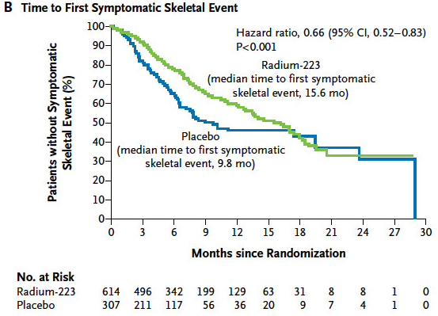
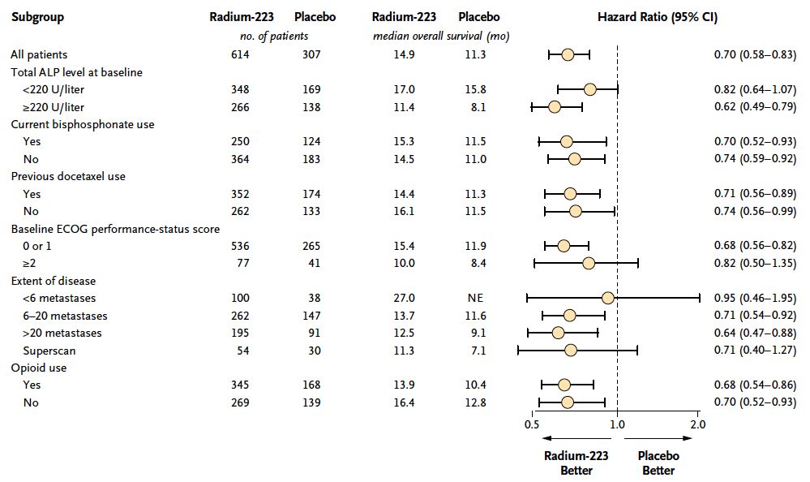
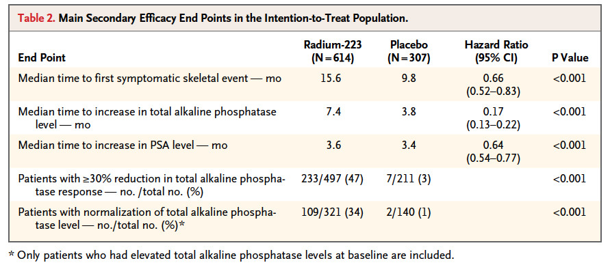

2014-01-13
Ra-223 treatment for metastatic prostate cancer
Kaohsiung Veterans General Hospital
Department of Nuclear Medicine
Sin-di Lee
More than 90% of patients with metastatic castration-resistant prostate cancer (mCRPC) have radiologic evidence of bone metastases.
Unlike other cancers, deaths from prostate cancer are often due to bone disease and its complication.
Seed and soil
Both tumor cells and a variety of stromal cells interact with a number of secreted paracrine factors in a “vicious cycle” that promotes the survival and proliferation of tumor cells.
In bone, cells such as the osteoblasts, osteoclasts, and hematopoietic cells (and their precursors) also represent components of the tumor micro-environment.
It is the tumor associated upregulated osteoblastic activity that promotes new bone formation and incorporation of the ‘bone seeking radioisotopes’ (BSRs) used therapeutically.
The uptake of BSRs is proportional to the osteoblastic nature of the bone metastatic disease.
Another approach to increase BSR uptake is through exploiting the ‘flare’ seen after LHRH agonists or abiraterone used in prostate cancer or after hormonal therapies in breast cancer.
Timing BSR therapy administration to take advantage of this flare is an unexplored but attractive concept.

http://www.pallimed.org/2011/07/denosumab-palifermin-and-costs-of.html
Bone scans in a breast-cancer patient before/after chronic bisphosphonate therapy
Alteration of Tc-99 MDP bone scan uptake in myeloma after bortezomib treatment
| Isotope | Half-life | Targeting agents | Particle | Max energy (MeV) | Mean energy | Penetration |
|---|---|---|---|---|---|---|
| Ra-223 | 11.4 d | - | Alpha | 27.78 | 6.94 | <0.1 mm |
| Sr-89 | 50.5 d | - | Beta | 1.46 | 0.58 | 2.4 mm |
| Sm-153 | 1.9 d | EDTMP | Beta | 0.81 | 0.22 | 0.5 mm |
| P-32 | 14.3 d | - | Beta | 1.71 | 0.69 | 3.0 mm |
| Y-90 | 2.7 d | Citrate | Beta | 2.27 | 0.93 | 4.0 mm |
| Lu-177 | 6.7 d | EDTMP | Beta | 0.49 | 0.14 | 0.3 mm |
| I-131 | 8.0 d | HDBP | Beta | 0.61 | 0.19 | 0.8 mm |
| Re-186 | 3.8 d | HEDP/etidronate | Beta | 1.07 | 0.33 | 1.0 |
| Re-188 | 0.7 d | HEDP | Beta | 2.12 | 0.64 | 3.8 |
| Ho-166 | 1.1 d | DOTMP/EDTMP | Beta | 1.84 | 0.67 | 3.3 mm |
| Sn-117m | 13.6 d | DTPA | Conversion electron | 0.15 | 0.14 | 0.2 |
http://en.wikipedia.org/wiki/Decay_chain
Published in 2005, 25 p'ts with bone mets from breast or prostate cancer received single injection of Ra-223 with different dose:
46, 93, 163, 213 or 250 kBq/kg and follow 8 weeks.
Published in 2007, only enrolled CRPC p'ts (2004-02 ~ 2005-05). Randomized to received:
| Outcome | Ra-223 | Placebo | P value |
|---|---|---|---|
| Median relative change in bone ALP level | -65.6% | 9.3% | <0.0001 |
| Other tumor markers (total ALP, PINP, CTX-1, ICTP) |
significant | ||
| Median time to SREs | 14 wks | 11 wks | 0.065 Hazard ratio: 1.75 |
| Median relative change PSA level (baseline and 4 wks after last injection) |
-23.8% | 44.9% | 0.003 |
| Median time to PSA progression | 26 wks | 8 wks | 0.048 |
| Median overall survival | 65.3 wks | 46.4 wks | 0.066 Harzard ratio: 2.12 |
| Myelotoxicity and other side effect | not different |
Published in 2012. Randomized, double-blind.
Aimed to investigate the dose-response relationship and pain-relieving effect in CRPC with bone metastases.
100 p'ts were randomized to received different doses of a single injection (5, 25, 50 or 100 kBq/kg).
| Dose | 5 | 25 | 50 | 100 |
|---|---|---|---|---|
| W2 | Significant difference, p = 0.035 | |||
| W8, pain responders | 40% | 63% | 56% | 71% |
| Complete response in responders | 30% | 42% | 44% | 52% |
| Overall survival | 50 wk. No diff. | |||
About 97% of patients reported at least one side effect.
Hematologic events were generally not severe, with slightly greater rates in the two highest-dose groups. Most frequent: anemia (11%) and Hb decrease (15%).
Most freq. non-hematologic AEs: nausea, vomiting, diarrhea, constipation, peripheral edema and bone pain. No difference across dose groups.
These two trials suggested efficacy of Ra-223 in p'ts with mCRPC, in both symptomatic improvement and prolongation of survival, and with a favorable safety profile.
Alpharadin in Symptomatic Prostate Cancer Patients study.
Double-blind, RCT, placebo-controlled study.
Primary end point: OS
Secondary end points: time to the first SRE, time to total ALP progression and normalization, total ALP response, time to PSA progression, safety and QoL.
A total of 921 p'ts were randomized on a 2:1 basis to receive Ra-223 (2008-06~2011-02).
50 kBq/kg/dose, 6 injection every 4 wks.
P'ts with CRPC during maintenance treatments were required to continue the treatment throughout the study.
Analgesic medication or EBRT for symptom control.
The interim results were analyzed after 314 events and in light of these results the Independent Data monitoring Committee (IDMC) recommened stopping the trial early, because there was evidence of a significant OS benifit favoring Ra-223.


Baseline clinical characteristics was balanced between the study group.
The safety population included 901 pt's (600 in Ra-223 group).
The planned interim analysis was based on data from 809 p'ts (541 in Ra-223 group).
| Group | Completed 6 injection | Median number of injection |
|---|---|---|
| Ra-223 | 387, 63% | 6 |
| Placebo | 145, 47% | 5 |




也有KM可以看
Adverse events rate was onsistently lower in the Ra-223 group than in the placebo group.
| Group | All AEs | Grade 3 or 4 AEs | Seriour AEs | Withdraw study-drug |
|---|---|---|---|---|
| Ra-223 n=600 | 558, 93% | 339, 56% | 281, 47% | 99, 16% |
| Placebo n=301 | 290, 96% | 188, 62% | 181, 60% | 62, 21% |
| Group | Ra-223 | Placebo |
|---|---|---|
| Disease progression | 11% | 12% |
| Bone pain | 10% | 16% |
| Anemia | 8% | 9% |
| Spinal cord compression | 4% | 5% |
More rate of patient in Ra-223 group had improvement of quality of life according to FACT-P score.
Increasing >=10 points on a scale of 0 to 156: 25% vs 16%, P=0.02
Mean change in FACT-P score from baseline to 16th wk: -2.7 vs -6.8, P=0.006
New data on use of cabazitaxel, abiraterone and enzalutamide is published as well.
A phase 1-2 trial of Ra-223 combined with docetaxel in patients with CRPC and bone metastases is currently ongoing.
{kind=link}
{kind=link}